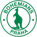

Slavia Praha host Artis in the Czech Liga (round 14) on Sunday 08 November 2026. Slavia Praha are #69 in our world ranking and have won 3, drawn 1 and lost 1 of their last 5; Artis are #1,591 and have won 1, drawn 2 and lost 2 of their last 5. On paper that's a big gap - 1,522 places - in Slavia Praha's favour.
Our model makes Slavia Praha the favourites at 86%, with a draw at 10% and Artis at 4%.
Slavia Praha are #69 and Artis #1591 in our world ranking of every senior club. Based on the two clubs' ratings and home advantage, the most likely result is Slavia Praha (86%). More from the Czech Liga.
| Date | Match | Score |
|---|---|---|
| 2026-11-08 | Slavia Praha v Artis | 4-1 |
| # | Club | P | Pts | World |
|---|---|---|---|---|
| 1 | Slavia Praha | 14 | 34 | #69 |
| 2 | Slovan Liberec | 13 | 26 | #320 |
| 3 | Mlada Boleslav | 14 | 25 | #369 |
| 13 | Baník Ostrava | 13 | 14 | #660 |
| 14 | Artis | 14 | 10 | #1591 |
| 15 | Slovácko | 14 | 10 | #1143 |
Every senior result from every country feeds one Elo rating system, so every club in the world sits on the same scale. Before each match the two ratings, adjusted for home advantage, give the chances of a home win, a draw and an away win. See the full world ranking and every match today.
| # | Club | P | W | D | L | GD | Pts |
|---|---|---|---|---|---|---|---|
| 1 | Slavia Praha | 14 | 10 | 4 | 0 | 28 | 34 |
| 2 | Slovan Liberec | 13 | 8 | 2 | 3 | 8 | 26 |
| 3 | Mlada Boleslav | 14 | 7 | 4 | 3 | 7 | 25 |
| 4 | Sparta Praha | 14 | 7 | 3 | 4 | 12 | 24 |
| 5 | Sigma Olomouc | 14 | 7 | 3 | 4 | 2 | 24 |
| 6 | Teplice | 14 | 6 | 3 | 5 | 0 | 21 |
| 7 | FK Jablonec | 14 | 6 | 3 | 5 | -2 | 21 |
| 8 | Plzen | 14 | 5 | 5 | 4 | 7 | 20 |
| 9 |  Bohemians 1905 | 14 | 5 | 5 | 4 | 0 | 20 |
| 10 | Zbrojovka Brno | 14 | 6 | 2 | 6 | -5 | 20 |
| 11 | Hradec Králové | 14 | 5 | 3 | 6 | -1 | 18 |
| 12 | Pardubice | 14 | 5 | 2 | 7 | -1 | 17 |
| 13 | Baník Ostrava | 13 | 4 | 2 | 7 | -13 | 14 |
| 14 | Artis | 14 | 2 | 4 | 8 | -13 | 10 |
| 15 | Slovácko | 14 | 2 | 4 | 8 | -13 | 10 |
| 16 | Zlin | 14 | 0 | 3 | 11 | -16 | 3 |